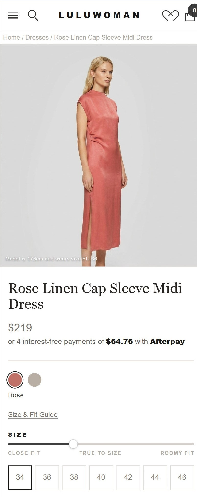
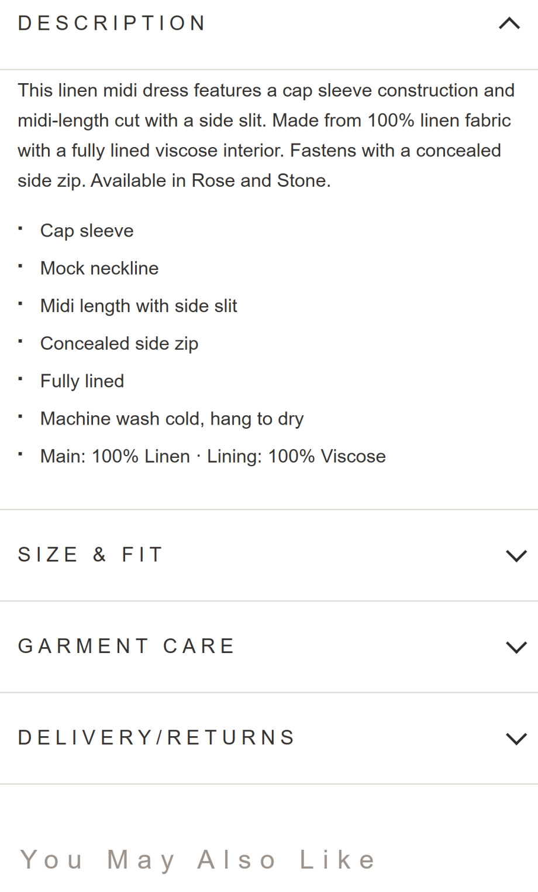
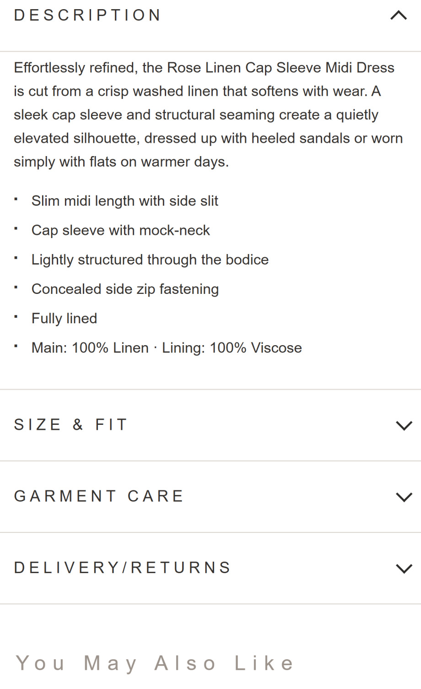
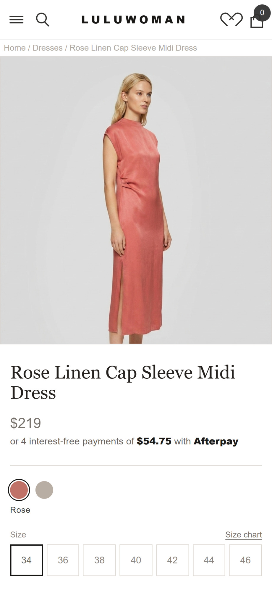
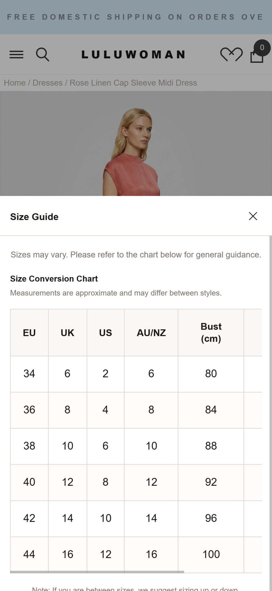
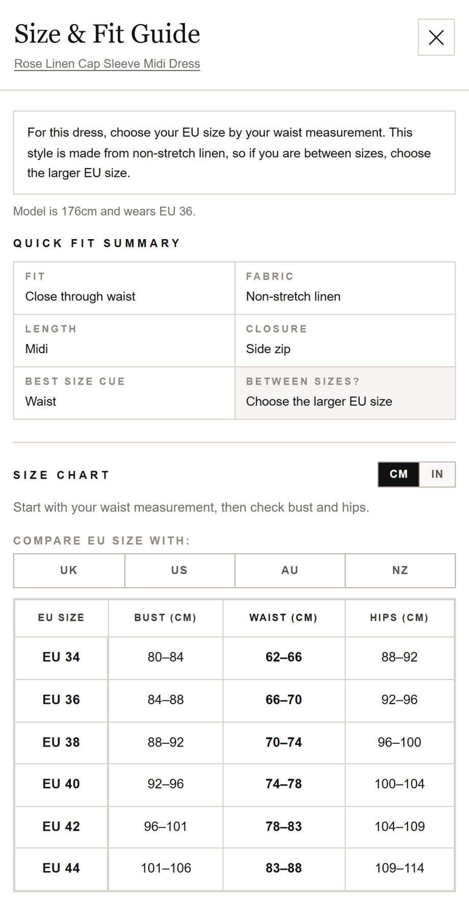
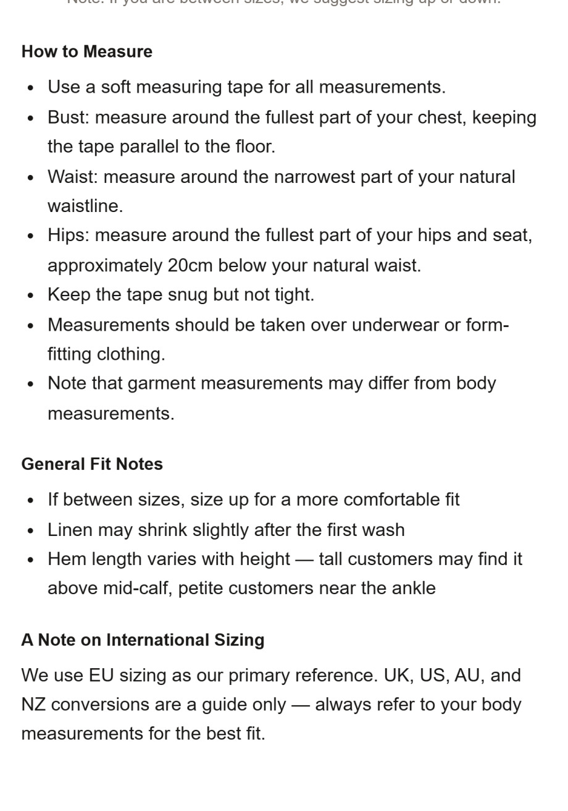
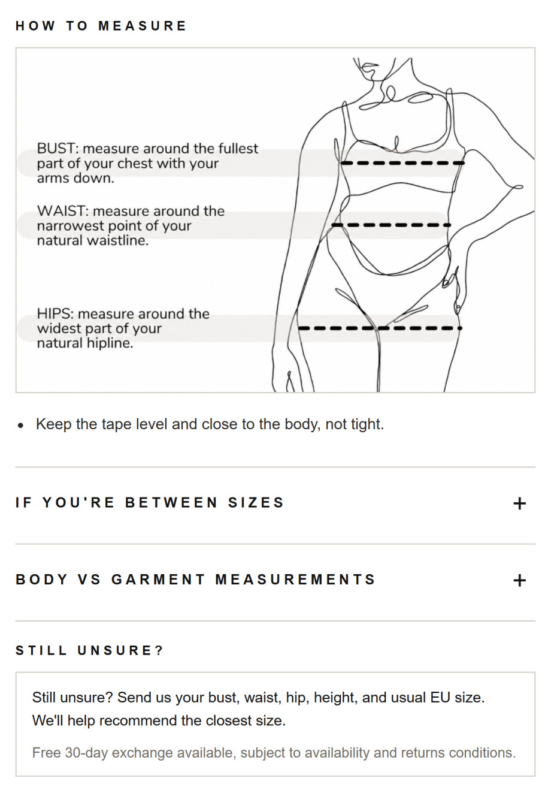

Same traffic.
Same products.
8% more of it converting.
LuluWoman is a premium contemporary womenswear label. The store looked the part, but shoppers were hesitating at the three moments that decide a sale. We rebuilt the product page, the size guide and the cart around one job: buying confidence. Four weeks later, every commercial metric had moved.

What it did to the numbers that pay the bills.
The ad spend stayed flat and the catalogue never changed. The same visitors simply converted more often, and spent more when they did.
- Before
- 2.97%
- After
- 3.21%
- +12%Add-to-cart rate
- +8%Average order value
- +45%Orders containing a recommended add-on
- +40%Recommended-product click-through rate
All figures are relative changes compared with LuluWoman's pre-implementation baseline, measured over the first four weeks live.
Shoppers arrived ready to buy, then lost their nerve.
LuluWoman already had the hard part right: product people wanted, and traffic arriving to see it. Shoppers were interested enough to reach the product page. They left because the store didn't yet answer the three questions that stand between wanting something and buying it.
01. We stopped describing the dress and started selling it.
Shoppers who liked the product still didn't add it.
Add-to-cart is the first commitment a shopper makes, and it's an emotional one. Nobody has ever bought a $219 linen dress because it was “fully lined”. They buy it because they can picture themselves wearing it.
So the description now opens by selling the outcome: how the dress falls and where she'd actually wear it. The specs move underneath, where they reassure the shopper who has already decided rather than lead the pitch. The size selector was rebuilt at the same time, with the model's height and worn size printed on the image itself, so the fit question starts getting answered before she even scrolls.
The product description
Spec sheet → a reason to want it.


The moment she picks a size
A grid of numbers → a guided choice, with fit context on the image.

02. The most expensive question in fashion is “will it actually fit me?”
Shoppers who wanted the product still didn't buy it.
It gets asked at the worst possible moment, by the shopper with the highest intent standing one click from checkout. If the store can't answer it, she does what every shopper does with an unresolved doubt: she tells herself she'll come back later, and she doesn't.
LuluWoman's old guide answered a question nobody was asking. It converted EU 38 into UK 10 and noted that measurements “may vary”.
The new guide answers the real question. It opens with a plain instruction for this dress: choose your size by your waist, and size up if you're between, because the linen doesn't stretch. From there she gets a quick fit summary, a waist-first chart, a diagram showing exactly where to put the tape, and a person to ask if she's still unsure.
Fit certainty converts twice: it wins the sale now, and it protects the margin later by putting fewer wrong sizes in the post.
The guide she opens
A conversion table → a straight answer for this garment.


Further down the guide
A wall of bullet points → a diagram, and a way to ask.


03. The old cart asked for more money. The new one makes it easy to spend.
Shoppers who bought spent the minimum.
LuluWoman's cart was working hard and earning nothing. It opened with a four-stage reward ladder that ran from free shipping all the way to $50 off, which is a lot of arithmetic to hand someone who has already decided to buy. Then it recommended a $149 skirt and a $165 blouse, both of them whole new purchase decisions that gave a ready buyer a reason to leave the checkout and start browsing again.
The new cart gives one goal in one line, you're $10.00 away from 10% off, then makes closing that gap easy. The recommendations became things she'd plausibly want anyway, like a $35 scarf or $45 shapewear, each showing its saving and each addable in a single tap without leaving the cart. A quiet row of reassurances sits directly above the checkout button, covering returns, exchanges and secure payment, right where the last hesitation happens.


We knew our product pages were underperforming and our average order value had plateaued, but we couldn't pinpoint why. They quickly identified issues around fit, product communication and cart bag building opportunities that we had overlooked. We really appreciated the great communication and always being kept informed throughout the project.
None of this required a single extra visitor.
LuluWoman didn't touch their ad spend, their product range or their pricing. What changed is how many of the people already landing on the store finished what they started, and how much each of them was worth when they did.
Those two things multiply. An 8% lift in conversion on top of an 8% lift in order value means every visitor arriving at the store is now worth measurably more than a month ago. That gap widens every time they run a campaign or send an email, on traffic they are already paying for.
This isn't a one-off. Oak & Hyde saw +43.75% conversion rate and +60% add-to-cart from the same category of fixes.
Your store is leaking too. Let's find where.
Send us your store and we'll record a video walkthrough showing the clearest places you're losing sales you've already paid for. Free, and no strings attached.
Got it. Your store's in the queue.
We'll review your store and send the video walkthrough back within 24 hours. Check your spam folder if it hasn't landed.